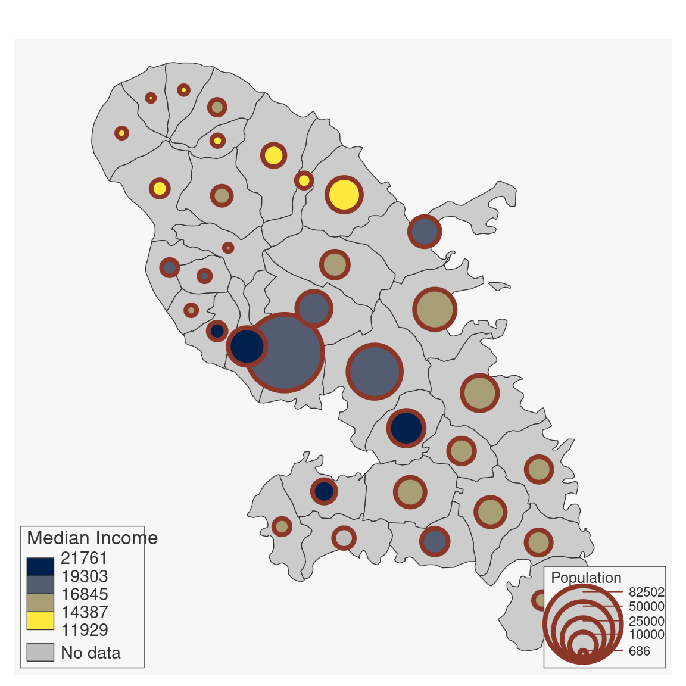

Plot proportional symbols with colors based on a quantitative data classification.
mf_prop_choro( x, var, inches = 0.3, val_max, symbol = "circle", pal = "Mint", alpha = 1, breaks = "quantile", nbreaks, border, lwd = 0.7, col_na = "white", leg_pos = mf_get_leg_pos(x, 2), leg_title = var, leg_title_cex = c(0.8, 0.8), leg_val_cex = c(0.6, 0.6), leg_val_rnd = c(0, 2), leg_no_data = "No data", leg_frame = c(FALSE, FALSE), add = TRUE )
Arguments
| x | object of class |
|---|---|
| var | name(s) of the variable(s) to plot |
| inches | size of the biggest symbol (radius for circles, half width for squares) in inches. |
| val_max | maximum value used for proportional symbols |
| symbol | type of symbols, 'circle' or 'square' |
| pal | a set of colors or a palette name (from hcl.colors) |
| alpha | if |
| breaks | either a numeric vector with the actual breaks, or a classification method name (see mf_get_breaks) |
| nbreaks | number of classes |
| border | border color |
| lwd | border width |
| col_na | color for missing values |
| leg_pos | position of the legend, two of 'topleft', 'top','topright', 'right', 'bottomright', 'bottom', 'bottomleft', 'left' or vector of two coordinates in map units (c(x, y)). leg_pos argument can be c('position', 'position'), c('position', x2, y2), c(x1,y1, 'position') or c(x1, y1, x2, y2). If leg_pos = NA then the legend is not plotted. |
| leg_title | legend title |
| leg_title_cex | size of the legend title |
| leg_val_cex | size of the values in the legend |
| leg_val_rnd | number of decimal places of the values in the legend |
| leg_no_data | label for missing values |
| leg_frame | whether to add a frame to the legend (TRUE) or not (FALSE) |
| add | whether to add the layer to an existing plot (TRUE) or not (FALSE) |
Value
x is (invisibly) returned.
Examples
mtq <- mf_get_mtq() mf_map(mtq) mf_prop_choro(mtq, c("POP", "MED"))mf_map(mtq) mtq[6, "MED"] <- NA mf_prop_choro( x = mtq, var = c("POP", "MED"), inches = .35, border = "tomato4", val_max = 90000, symbol = "circle", col_na = "grey", pal = "Cividis", breaks = "equal", nbreaks = 4, lwd = 4, leg_pos = c("bottomright", "bottomleft"), leg_title = c("Population", "Median Income"), leg_title_cex = c(0.8, 1), leg_val_cex = c(.7, .9), leg_val_rnd = c(0, 0), leg_no_data = "No data", leg_frame = c(TRUE, TRUE), add = TRUE ) 